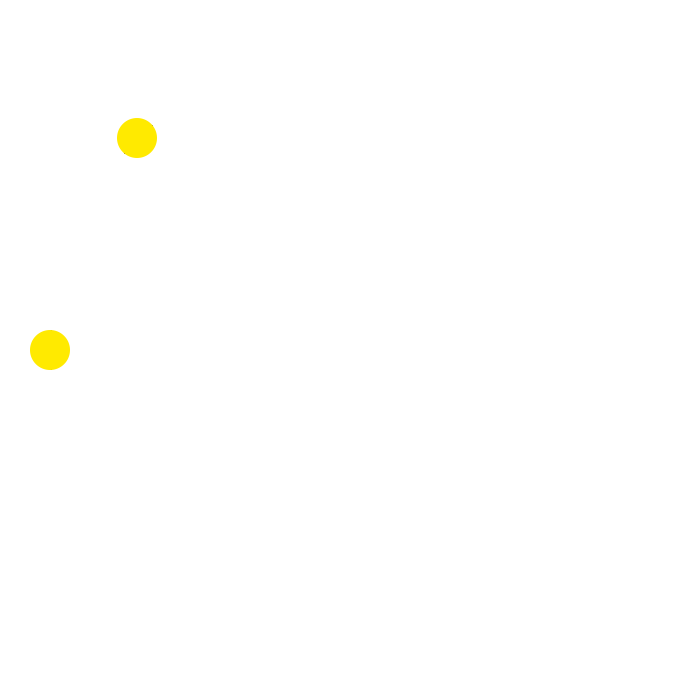
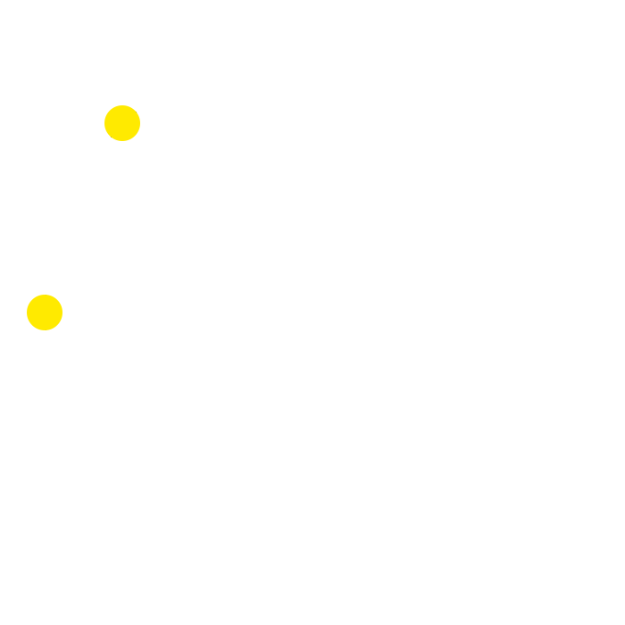

- Atomnummer: 28
- Atommassa: 58,693
- Ämnesklass: Posttransitionsmetall
- Grupp: 10
- Period: N(4:e Perioden)
- Block: D-blocket
- Aggregationstillstånd: Fast
- Elektronkonfiguration: 2 8 16 2
- Smältpunkt: 1455°C (1728 K)
- Kokpunkt: 2730°C (3003 K)
- Trippelpunkt: N/A
- Kritisk punkt: N/A
- Densitet: 8,908 g/cm3
- Oxidationstillstånd: +IV +III +II +I -I -II
- Elektronnegativitet: 1,91
- Jonisationspotential: 737 KJ/mol(1:a)
- Kovalent radie: 124+-4 pm(Låg Spin)
- Van der Waal radie: 163 pm
NICKEL
 
